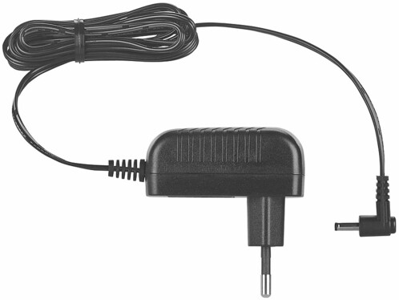

Une station météo qui retransmet les données reçues par un capteur.
Le capteur sans fil transmet ses données jusqu'à une porté de 60m.
Il permet de connaitre la météo, la température autour du capteur, l'humidité de l'air et
la pression atmosphérique.
La station affiche les données du capteur et des données additionelles, comme :
La station dispose aussi d'une application qui permet, à distance, de connaitre les données du capteur. Vous pouvez donc anticiper le temps qu'il fait et vous adapter. Pratique non ?
54,75€
Capteur pour station météo FWS-810